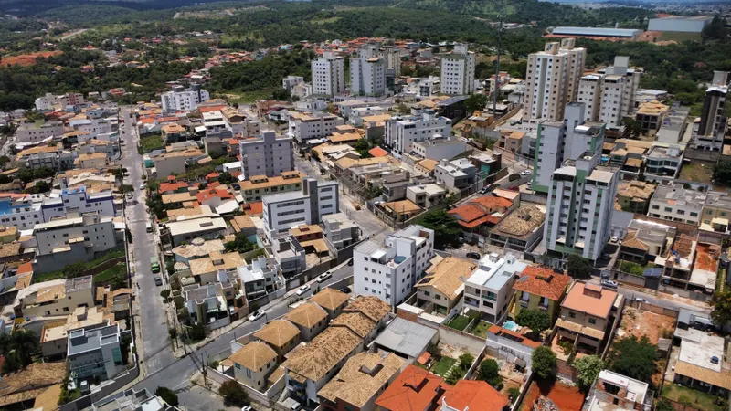

Pesquisa 02 · Gestão pública
Avaliação da gestão e dos serviços públicos
Saiba o que a população pensa da sua gestão e dos serviços públicos antes de definir prioridades e investimentos.
Em resumo
- Para quem
- Prefeituras, secretarias e gestores públicos
- O que você descobre
- Avaliação da gestão, dos serviços e das demandas por região
- Como é feito
- Planejamento próprio e entrevistas presenciais com moradores
- O que você recebe
- Relatório com análise e reunião com a equipe da gestão
Quer saber como a população avalia a sua gestão?Receba uma proposta com escopo e orçamento. Preço sob consulta.
Solicitar orçamento- Avaliação de prefeitura
- Avaliação da gestão pública
- Pesquisa de satisfação com serviços públicos
- Demandas da população
- Avaliação de serviços de saúde, educação e mobilidade
- Pesquisa para prefeituras no Sudoeste do Paraná
- Pato Branco – PR
- Paraná, Santa Catarina e Rio Grande do Sul
O que você vai saber
A cidade responde, você prioriza.
O questionário é definido com a equipe da gestão. Alguns exemplos:
- 01Como a população avalia a gestão municipal neste momento?
- 02Quais serviços públicos são mais bem e mais mal avaliados?
- 03Quais são as principais demandas de cada bairro ou região?
- 04Os programas e as obras da gestão são conhecidos pela população?
- 05Onde concentrar esforços e investimentos no próximo período?
- 06Como a percepção evoluiu desde a última avaliação?
Para quem é indicado
Para quem administra o que é público.

Prefeituras
Que querem conhecer a avaliação da administração e das políticas em andamento.
Secretarias municipais
Que precisam avaliar serviços específicos, como saúde, educação ou mobilidade.
Gestores públicos
Que planejam prioridades e investimentos a partir das demandas da população.
Instituições públicas
Que buscam entender a percepção de quem utiliza seus serviços.
O que você descobre
Da avaliação ao planejamento.
Medir a satisfação
Identificar demandas
Priorizar investimentos
Avaliar a comunicação
Comparar regiões
Acompanhar a evolução
Como funciona
Da conversa inicial à reunião com a equipe.
Prazos definidos na proposta. Ver metodologia
- Etapa 01
Conversa inicial
Decisões a apoiar e áreas a avaliar.
- Etapa 02
Planejamento
Público, amostra por região, questionário e cronograma.
- Etapa 03
Coleta presencial
Entrevistas com moradores, com sigilo para quem responde.
- Etapa 04
Análise
Resultados por tema e por região, conforme o plano.
- Etapa 05
Apresentação
Relatório e reunião com a equipe da gestão.
Por que pesquisar
Gestão orientada pela voz da população.
Invista onde a população mais precisa.
Enxergue as diferenças entre as regiões da cidade.
Saiba o que já chegou à população e o que ainda não chegou.
Entenda em detalhes
Avaliação de prefeitura e de serviços públicos
Toque em um tópico para ler mais.
Por que avaliar a gestão pública
Recursos são limitados e as demandas, muitas. A avaliação da gestão pública mostra como a população percebe a administração e os serviços prestados — e onde estão as necessidades mais sentidas.
A TECPR realiza pesquisas de avaliação para prefeituras, secretarias e instituições públicas, com prioridade no Sudoeste do Paraná e atendimento em municípios do Paraná, de Santa Catarina e do Rio Grande do Sul. O estudo pode abranger a gestão como um todo ou concentrar-se em áreas e serviços específicos.
Tipos de avaliação
- Avaliação da gestão municipal: percepção geral sobre a administração.
- Satisfação com serviços públicos: saúde, educação, mobilidade, infraestrutura e outros.
- Demandas da população: o que as pessoas consideram prioritário em cada região.
- Percepção das ações: se programas e obras são conhecidos e como são avaliados.
O que a avaliação pode mostrar
- Medir a satisfação: com a gestão e com cada serviço público avaliado.
- Identificar demandas: levantar o que a população considera mais urgente.
- Priorizar investimentos: apoiar decisões sobre onde concentrar recursos.
- Avaliar a comunicação: verificar se as ações da gestão chegam às pessoas.
- Comparar regiões: entender diferenças de percepção dentro do município.
- Acompanhar a evolução: repetir a avaliação para observar mudanças ao longo do tempo.
O que está incluído no projeto
- Planejamento do estudo: proposta com objetivos, áreas avaliadas, amostra e cronograma.
- Coleta presencial: entrevistas realizadas por equipes orientadas para o estudo.
- Relatório com análise: resultados organizados por tema e interpretados à luz dos objetivos.
- Reunião de apresentação: encontro com a equipe da gestão para discutir os resultados.
Preço sob consulta, conforme o escopo definido na proposta.
O que muda com a avaliação
- Prioridades fundamentadas: decisões de investimento apoiadas na percepção de quem usa os serviços.
- Visão por região: diferenças entre bairros e localidades ficam visíveis quando previstas no planejamento.
- Comunicação mais precisa: saber o que a população conhece — e o que ainda não chegou até ela.
- Base para acompanhamento: uma referência para comparar avaliações futuras.
Avaliação da gestão e pesquisa política
Para lideranças que precisam também do cenário político, a pesquisa política e de opinião complementa a leitura.
Sim. O escopo pode abranger a gestão como um todo ou concentrar-se em uma área ou serviço específico. Essa definição é feita no planejamento, conforme a decisão que a pesquisa deve apoiar.
Quando esse recorte é necessário, ele é previsto no planejamento da amostra, para que cada região tenha entrevistas suficientes. O nível de detalhe possível é informado na proposta.
Sim. Repetir a pesquisa com o mesmo desenho permite comparar resultados e acompanhar a evolução da percepção da população ao longo do tempo.
A coleta é presencial, feita por equipes orientadas para o estudo, com abordagem respeitosa e confidencialidade das respostas.
Gestão pública
O que a população pensa da sua gestão?
- Orçamento conforme o escopo
- Atendimento no PR, SC e RS
- Retorno pelo canal que você indicar
Conte o que precisa avaliar. A TECPR retorna para entender o objetivo e preparar a proposta.
- 1Você conta o que precisa descobrir
- 2A TECPR conversa com você sobre o estudo
- 3Você recebe a proposta com o orçamento